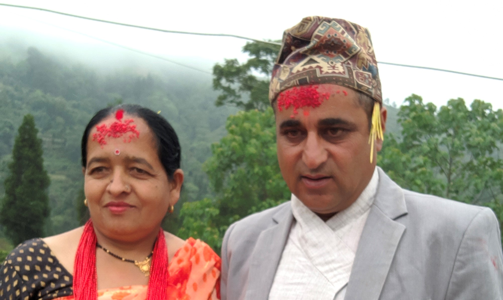

Well, if you want to know me a little more, you can move forward reading. I would really love to share about myself a little deep with you.
I am an inhabitant of Ilam District in a place named Nayabazar. I grew up in the easten hills of Nepal. The only reason I am here is because of my loveable parents who never denied my wishes and kept supporting me. No matter where I go, I will never forget to tribute them.
Baba & Aama Ghanashyam & Chhatra Kumari Poudel

Hobbies & Passion:
Speaking about passion I used to be that kind of boy who just changes his aim all the times. But as years passed by, I started getting precise about my goals and all my intrest begun to concentrate in the world of computer & internet. I remember I got a laptop when I was 14 or near 14. The moment my father poped the package of laptop out of his bag, my legs couldn't feel the ground anymore.
I loved to spend hours and hours sitting in front of my laptop.I once nearly crashed it installing random softwares. As I soon realized the usability of laptop, that was the moment I found my passion hidden inside something pre existing for years in my room.
Talking about my hobbies, I really love trying & experiencing everything. I want to miss none. Speaking precisely, riding bikes with friends, adventure, making friends, are some of my hobbies.